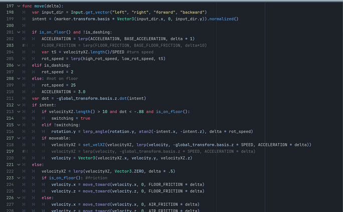
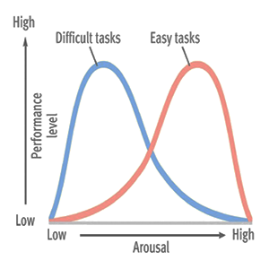
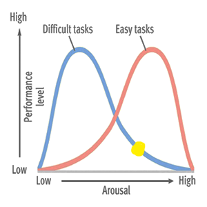
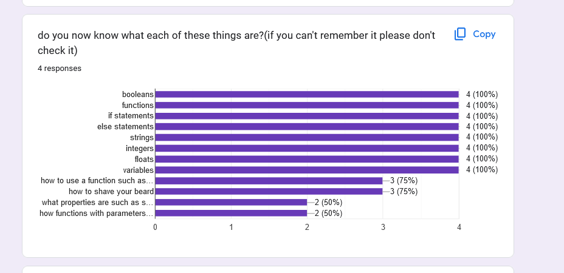
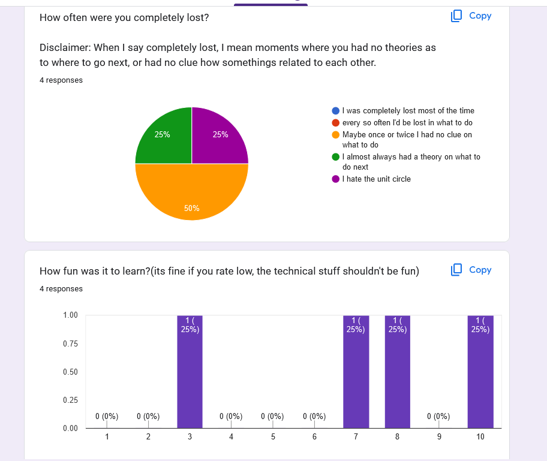

(reading time: few seconds to check if its working)
Introduction
Before this paper starts, I want to thank all of my peers who were willing to let me "teach them programming". I learned so much from this experience and I am forever grateful for their patience.
When the average person thinks of programming, they often get the message that only smart math people can do it and that the only people who know it are college graduates or prodigy children.
But this is false, if you can solve the problem 1 + x = 2, then you can understand the foundations of programming.
This sterotype is one of the main reasons why I wanted to teach a few of my peers how to program. I believed that I could remove the sterotype of programming in 3, 6 hour long lessons.(key word believed)
The first objection that comes to mind is that, "doesn't programming take years to learn? Isn't theres a reason why colleges have programs to teach computer science?" And yes, it can take years to be good at programming fast, but if you want to start creating whatever you want, you only need a few concepts to be taught within a few hours.
Within 2 days, my peers had the confidence to read this code. 
There was 3 main things that I wanted to do, teach them the basic concepts in programming, teach them how to google, and to get them inspired to create their own ideas(the last one failed misserably)
Day One
Teaching my peers was a unique challenge in itself, for one, i've never really taught anything like this and two, these were my peers. Normally it would not seem like an issue but there this means I don't have the authority or credibility as a computer science teacher(not saying I am as good as a cs teacher).
Students simply feeling like they are being taught by someone who knows what they are doing reduces stress and reduced stress increases learning(Amanda)
But heres day 1 
It took me a while to decide on what to start teaching first, programming is technically an infintely complex field, so
how do you give people the tools to begin creating something interesting while also not overwhelming them?
I was able to narrow it down to 3 main concepts.
If Statements, Functions, and Variables
Explaining what they are is out of the scope of this paper, but with these tools it is possible to create pretty much anything in programming.
Also, if im gonna be honest, while its not completly false, this is just a definition of programming that I created.
The benefit to this is that one, these three things can get them infinitely far and two, it prevents cognitive overload. Cognitive overload is the natural capacity of our short term memory to learn around 4 -+ 1 things at once.(Case)
After this, it was on the inevietble and daunting task of actually teaching the boring part of programming, the syntax. This is the same as teaching grammer in english. No one wants to learn it so how do you make it entertaining?
Well it turns out there is not many options around it, humans tend to learn new concepts through passive and dry learning, aka word for word definitions and memorizations. This relates back to the idea of cognitive load, a student can't start writing a novel without learning how to structure a word and sentance first.(Sian)
Here is the predicament though,
according to the young modulus graph students learn best when stress levels are kept at a sweet spot.
For a difficult task, they can perform well if its made to be entertaining. 
Arousal can also mean stress level*
So how is it possble to take a difficult task such as learning syntax into something stress free?
Enter... Multimodal Explanations.
While they aren't the greatest at Teaching dry topics like syntax, they can certainly help ease students into a topic,
One option of multimodal explanations that I wanted to include were interactives. Because, if my peers came all the way to my house to learn programming, they expect to actually do things, not to just sit there while i list off facts about syntax.
insert the explanation interactive here, hopefully finish it in time so atm it is WIP
slowly sprinkle in passive learning topics throughout the process tricking the student into accidently learning the boring topic. In reality, programmers can often accidently learn things like code orginaztion on accident while actively learning how to create a video game.Okay now to reveal what I chose as my multimodal interactive. Block coding.
There was one big flaw with this though, this multimodal distracted from the content that was meant to be taught. Often students would get stuck focusing on how to use the software itself before they could actually invision their program.
Going back to ther Yerkes-Dodson graph, this is where they were. 
In the end, this is why choosing the medium for learning can be extremly important. But it could've been worse, if my peers started out typing programs in script the learning curve would be even higher.
Although i tried my best to reduce this to the best of my extent given the time. Here are some general guidelines to follow when creating multimodal interactives to reduce cognitive overload.
- Don't teach the student how to use the software, instead create preset projects in the software that students can interact with. Ex.(if teaching a student how to cut clips together in a video editing software, have preset videos in the timeline that need to be cut)
- Have examples for students to reference, even an answer key can work. This allows students to feel less stressed about going the wrong way and gives instant feedback to learn from.
If there was a perfect solution, it would be to create a multimodal interactive thats charming, simple and fun. The issue with this is that it takes time and skill to create. So the 2nd best option is to use interactable tools that relate to the topic that is being taught.
All in all, day one got the main message across, and suprisgnly students even remembered some of the details. 
on top of this day almost perfectly hit the sweet spot. The goal was to not have them always know what to do, nor should they have been completely clueless. So staying in the yellow zone here fits yerkesdodson's graph quite well. 
Day 2
Like mentioned earlier, the goal was to get my peers to understand how to read written code in 2 days. I didn't neccecarily think I could get them to be good at programming, but I needed them to know how to teach themself.
Day 2 consisted of teaching the same exact thing as last time but in a new perspective, rather than writing in block code they would move into actual written code. This was once again intimidating as they had to learn a completely new software again while learning how to write code at the same time.
This time around it was about the same thing, lots of pre made projects and puzzles made for my peers to go through. each one focused on a specific concept in programming so they can experience a usefulness to programming.
There was one major difference between this course and the last one though. Near the encoding we did something different and unplanned. We decided to go back to the original chunk of code that seemed to be impossibly complex.
Rather than just spitting out what this code did, with a definite answer in mind I simply asked my peers to infer about what this is. Even though they never leared what the code did specifically, they understood that all they need to know was variables, functions and if statements.
The magic in this is that it gave them confidence to actually start having a disccusion.
Sure by the end of the discussion they didn't fully understand what the code was, and to be honest even i didn't full understand what I wrote in that code.
But the point is, they started to use critical thinking to think of their own interpretations.
Which in the end, logical thinking is what programming is all about.
Ps. :here is an example of one of my peers going through the mental process of figuring out what this code is
This is honestly something that I wish would've happened more, but this'll be talked about more in day 3.
Day 3
Day 3 was a catastrophe, but because it was so horrible I learned a lot.
I had a lot of ambitions for the final day, and a lot of experimental ideas that I thought would work but failed misserably. My ideas for the course
were so experiemntal to the point where it's hard to put into words in this paper.
Here is a summary of the ambitions for the final day
- Cover how hard or easy it can be to create games
- Explain how easy it is to create games with the help of software
- How to create unique and engaging ideas for games
- Inspire my peers to learn and create games on their own
At this point, I felt like I taught the most important things about programming. If I were to teach anything more it would've been specific tools and tequniues that my peers would be better off learning through experimentation and googling.
As it was mentioned before, complete begginers learn best through passive learning, but since my peers had basic knowledge the first assumption was that they could start coding using active learning. After all, active learning is more fun right?
Here starts the decline towards failure. First,
Summary
Summary of tips to teach programming
- Have breaks, this goes without saying but its proven to Help
: Works Cited
Beilock, Sian L., and Daniel T. Willingham. “Ask the Cognitive Scientist.” Math Anxiety: Can Teachers Help Students Reduce It?, vol. 38, no. American Educator, 2014, pp. 28-32. Math Anxiety: Can Teachers Help Students Reduce It? Ask the Cognitive Scientist, https://files.eric.ed.gov/fulltext/EJ1043398.pdf. Accessed 16 3 2024.
Boaler, Jo. “Fluency Without Fear.” YouCubed, 28 01 2015, https://www.youcubed.org/evidence/fluency-without-fear/. Accessed 16 March 2024.
Case, Nicky. “Curse of the Chocolate-Covered Broccoli (or: Emotion in Learning).” Nicky's Blog, 5 December 2019, https://blog.ncase.me/curse-of-the-chocolate-covered-broccoli-or-emotion-in-learning/. Accessed 16 March 2024.
Finkel, Dan (2017, Feb) Five Principles of Extraordinary Math Teaching [Video] TED. https://www.youtube.com/watch?v=ytVneQUA5-c&pp=ygUNdGVhY2hpbmcgbWF0aA%3D%3D
Gonzalez, Jennifer. “Frickin' Packets.” Cult of Pedagogy, 26 March 2018, https://www.cultofpedagogy.com/busysheets/. Accessed 8 April 2024.
"I need a counterclaim from a hostile audience for the following
claim: (claim) Students should be able to use AI software because they will need to use it in their future careers." prompt. ChatGPT, ChatGPT 3.5, OpenAI, 6 Feb. 2024, chat.openai.com/chat.
"I need a counterclaim from a hostile audience for the following
claim: (claim) Students should be able to use AI software because they will need to use it in their future careers." prompt. ChatGPT, ChatGPT 3.5, OpenAI, 6 Feb. 2024, chat.openai.com/chat.
"I need a counterclaim from a hostile audience for the following
claim: (claim) Students should be able to use AI software because they will need to use it in their future careers." prompt. ChatGPT, ChatGPT 3.5, OpenAI, 6 Feb. 2024, chat.openai.com/chat.
"I need a counterclaim from a hostile audience for the following
claim: (claim) Students should be able to use AI software because they will need to use it in their future careers." prompt. ChatGPT, ChatGPT 3.5, OpenAI, 6 Feb. 2024, chat.openai.com/chat.
"I need a counterclaim from a neutral audience for the following
claim: (claim) Students should be able to use AI software because they will need to use it in their future careers." prompt. ChatGPT, ChatGPT 3.5, OpenAI, 6 Feb. 2024, chat.openai.com/chat.
"I need a counterclaim from a neutral audience for the following
claim: (claim) Students should be able to use AI software because they will need to use it in their future careers." prompt. ChatGPT, ChatGPT 3.5, OpenAI, 6 Feb. 2024, chat.openai.com/chat.
"I need a counterclaim from a neutral audience for the following
claim: (claim) Students should be able to use AI software because they will need to use it in their future careers." prompt. ChatGPT, ChatGPT 3.5, OpenAI, 6 Feb. 2024, chat.openai.com/chat.
"I need a counterclaim from a neutral audience for the following
claim: (claim) Students should be able to use AI software because they will need to use it in their future careers." prompt. ChatGPT, ChatGPT 3.5, OpenAI, 6 Feb. 2024, chat.openai.com/chat.
Meyer, Dan. “If Math Is The Aspirin, Then How Do You Create The Headache?” dy/dan, 17 June 2015, https://blog.mrmeyer.com/2015/if-math-is-the-aspirin-then-how-do-you-create-the-headache/. Accessed 16 March 2024.
Kartak, Amanda. Real World Reboot: Multimodality. 2022. Saint Mary's University of Minnesota, Masters of Education in Teaching and Learning.
Lockhart, Paul. A Mathematician's Lament. Illustrated edition ed., Bellevue Literary Press, 2009.
Sanderson, Grant. When do programmatic visuals help in understanding math? 14 Oct 2021. youtube, https://www.youtube.com/watch?v=gvck7ssg9dE.
Shoenfeld, Alan H. “When Good Teaching Leads to Bad Results: The Disasters of "Well Taught" Mathematics Courses.” Educational Psychologist, vol. 23, no. 2, 1988, p. 22. researchgate, https://www.researchgate.net/profile/Alan-Schoenfeld-2/publication/239027194_When_Good_Teaching_Leads_to_Bad_Results_The_Disasters_of_%27Well-Taught%27_Mathematics_Courses/links/02e7e528dae5f8984d000000/When-Good-Teaching-Leads-to-Bad-Results-The-Disasters.